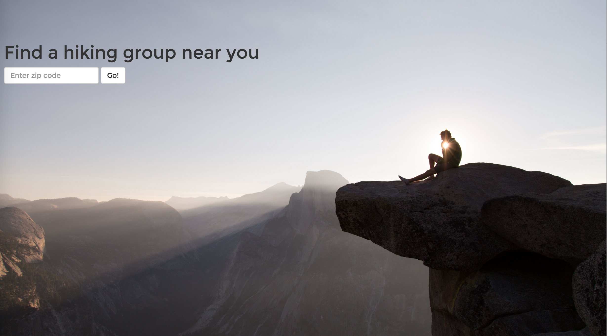
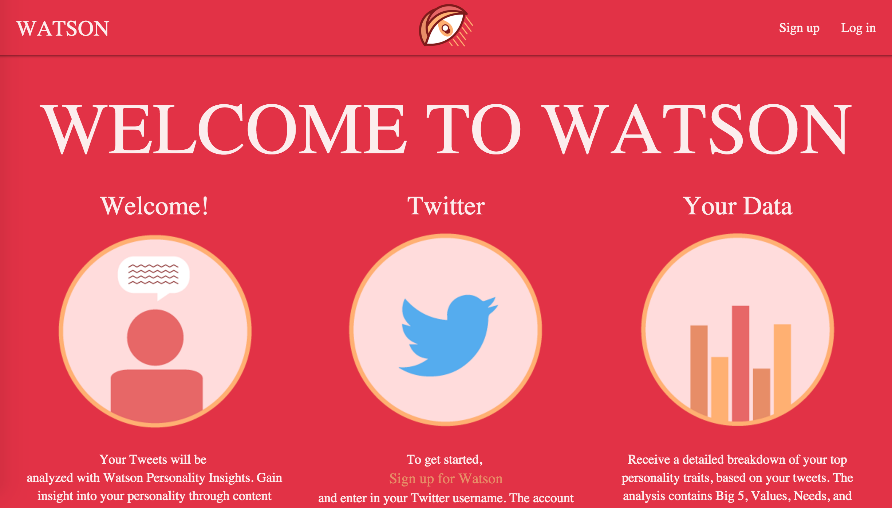
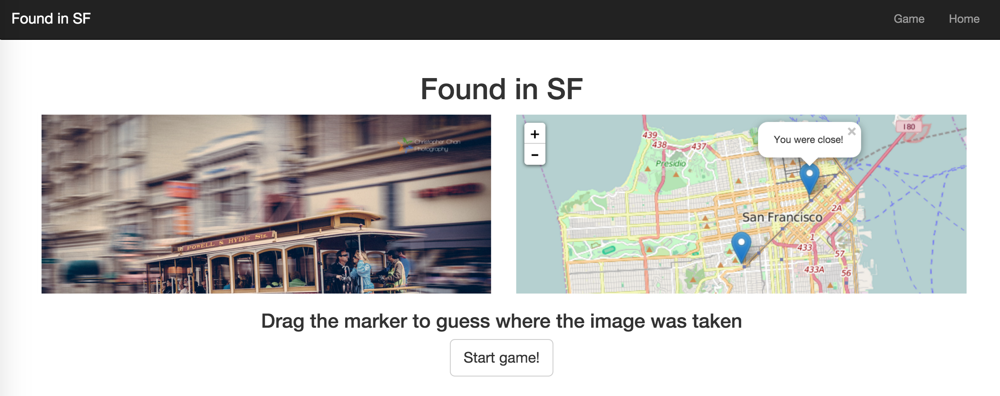
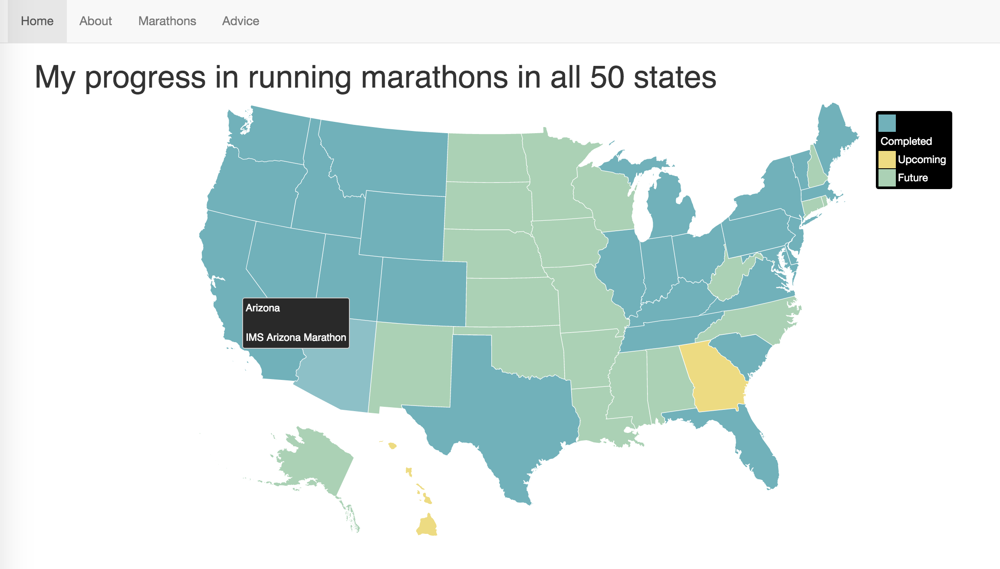

Outside Bound
- Outside Bound provides the closest trails to campsites in 4 West Coast cities.
- Built with Javascript, jQuery, Backbone, Underscore, ReserveAmerica and EveryTrail APIs, Elasticsearch, Amazon Elasticsearch Service, Mapbox, Cheerio, Node, Express, and Bootstrap.
- Github

Take a Hike
- Take a Hike provides nearby hiking meetups from Meetup.com.
- To log in: username "demo" and password "demo123".
- Built with Javascript, jQuery, Node.js, Express, Meetup and Google Maps APIs, MongoDB, Bootstrap, and Socket.io.
- Github

Watson
- Allows users to retrieve their tweets from their public Twitter account for analysis of personality traits (Big 5, needs, values), as well as positivity sentiment and concepts tweeted about.
- To log in: username "demo@demo" and password "demo123".
- This app was developed as a team effort with Stanley Stevens and Adam Abeyta.
- Built with Ruby on Rails, Javascript, jQuery, PostgreSQL, Watson API (Personality Insights), and Watson API (Alchemy).
- Github

Found in SF
- Found in SF is a MEAN stack app where you drag the marker on the map and guess where a photo was taken, when see how close you were. This was built over a weekend. In the future, more photos and features will be added.
- Built with Mongo, Express, Angular, Node, and Mapbox.
- Github

50 State Run
- 50 State Run tracks my progress towards running marathons in all 50 states.
- Built with jVectorMap, Javascript, and Bootstrap.
- Github
Resume
-
Contact
- vframbach@gmail.com
- Languages: Ruby, Javascript, CSS, HTML
- Frameworks: Ruby on Rails, jQuery, Express, Bootstrap
- Databases: MongoDB, Postgres, MySQL
- Technologies: Node.js, Git/Github, Elasticsearch
- General Assembly
- Web Development Immersive Student, Oct 2015-Feb 2016
- -Learned front-end and back-end development in 12 weeks to create responsive web applications.
- -Built full-stack web applications using Javascript, Ruby on Rails, CSS and HTML.
- Lash Group, Reimbursement Counselor, 2013-2015
- Temple University, Alumni Admissions Volunteer, 2014-2015
- Rite Aid Pharmacy, Pharmacy Technician, 2008-2013
- Chrysler Financial, Loss Mitigation Specialist, 2008-2010
- General Assembly, Web Development Immersive October 2015-February 2016
- Delaware Valley University, BS Chemistry 2011-2013
- Temple University, BA English 2007-2009
Skills
Relevant Experience
Past Experience
Education